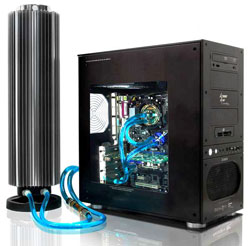

Водяная система охлаждения компьютерной техники.

Проблема эффективного охлаждения основных узлов компьютерной техники являлась актуальной ещё со времён появления первых компьютеров и не утратила своей важности и сейчас.
Процессоры, графические чипы и другое высоко технологичное оборудование для качественной и безопасной работы нуждается в эффективном охлаждении.
Сейчас современная промышленность предлагает разные пути решения проблемы перегрева компьютерной техники начиная от пассивного охлаждения в виде тепло рассеивающего радиатора
до высоко технологичных систем охлаждения, одним из примеров которого является водяное охлаждение. Системы водяного охлаждения в качестве теплоносителя используют воду и сначала
отдают тепло ей, в то время как обычные системы воздушного охлаждения отдают тепло напрямую воздуху. Они работают так: с корпуса процессора или другого тепловыделяющего элемента
тепло передаётся воде с помощью специального блока, называемого ватерблоком. Затем нагретая вода с помощью специальной водяной помпы поступает в охлаждающий радиатор в котором
вода отдаёт тепло воздуху и это тепло затем удаляется из системного блока компьютера.
Преимущества водяного способа охлаждения перед традиционным воздушным становится очевидным уже потому, что вода,как теплоноситель, обладает значительно большей теплоёмкостью
чем воздух. По этому водяная система охлаждения сможет снизить температуру теплоёмких элементов значительно лучше и быстрее чем воздушная. Кроме того нельзя забывать и проблемы
шумности: водяное охлаждение благодаря своей конструкции и высокой эффективности может работать практически без шума тем не менее в полной мере выполняя свою задачу, даже в мощных
компьютерных системах. Так же при обилии мощных видеокарт, периферийных устройств и дополнительных модулей компьютера, расстояние между этими модулями настолько мало, что холодный
воздух просто не может проникнуть к ним и эффективно охладить эти устройства, а с помощью водяного охлаждения можно легко решить эту проблему.
Принципиально системы водяного охлаждения включают в себя определённый набор элементов: ватерблок, водяная помпа, радиатор охлаждения, соединительные шланги, крепёжные элементы (фитинги)
и собственно вода. Рассмотрим каждый элемент подробнее.
Ватерблок-представляет собой особый теплообменник, благодаря которому тепло от греющегося элемента передаётся воде. Он обычно имеет медное основание, для лучшего теплообмена и
пластиковую крышку, а так же набор креплений для установки его на тепло выделяемый элемент. Для каждого нагреваемого элемента компьютера существует свой ватерблок. Первые ватерблоки
оснащались мощной медной ножкой в 1-2см, но сейчас их наоборот делают тонкими для быстрейшего теплообмена.
Водяная помпа представляет собой насос, задачей которого является обеспечение циркуляции воды в охлаждаемом контуре. Применяются помпы работающие от 220 или 12 вольт. На заре эры
водяного охлаждения в основном применялись аквариумные помпы работающие от 220v, что создавало определённые проблемы для совместной работы помпы и компьютера,а затем с развитием
техники появились современные устройства работающие от напряжения 12v и при том обеспечивающие эффективную работу системы охлаждения. Это особенно актуально учитывая то, что
современные высокопроизводительные ватерблоки обладают достаточно большим гидросопротивлением.
Радиатор охлаждения передаёт накопленное ватерблоком тепло воздуху. Конструктивно радиаторы охлаждения бывают двух видов: пассивные (не оснащённые вентилятором) и активные (продуваемые
вентилятором). Из-за низкой эффективности пассивные радиаторы сейчас практически не встречаются, даже с учётом бесшумности из за отсутствия вентилятора. Кроме того они занимают очень
много места. Активные вентиляторы являются значительно более эффективными в сравнении с пассивными и сейчас являются наиболее распространёнными. Эти радиаторы встречаются самого
разного размера, но в основном их размер соотносится с размерами 120 или 140мм вентиляторов. В большинстве корпусов есть место для подключения системы водяного охлаждения с радиатором
120мм.
Соединительные шланги так же являются важной частью системы водяного охлаждения. Их обычно изготавливают из ПВХ или силикона и при выборе шланга важной является только их толщина
(брать шланг тоньше 8мм не рекомендуется).
Фитинги-это соединительные элементы, с помощью которых связываются отдельные части СВО. Они вкручиваются в элементы системы охлаждения без усилия и уплотняются специальным резиновым
кольцом. Фитинги бывают самых разных форм и размеров для того, чтобы каждый пользователь такой системой мог выбрать соединители именно для своей модели.
Для заполнения системы лучше всего использовать дистиллированную воду, которая прошла очистку от всех вредных примесей. Использовать обычную воду крайне не рекомендуется.
Кроме обязательного набора элементов, существуют и дополнительные: термодатчики, сливные краны, резервуар, датчики вентиляторов и помпы, фильтры и др. Каждый пользователь сам выбирает
для себя тот или иной компонент исходя из его нужности. Нужно отметить что системы водяного охлаждения бывают внешними и внутренними. Внутренние системы полностью помещаются в системный
блок компьютера, а во внешних основной блок вынесен за пределы компьютера и соединяется с ватерблоками, установленными в нём при помощи шлангов. В продаже есть как готовые устройства
систем охлаждения, так и системы собираемые самостоятельно из отдельных компонентов.
Стоимость систем водяного охлаждения зависит от набора элементов, которые вы собираетесь установить: можно собрать эффективную систему по приемлемой цене, а можно установить на неё
дополнительные элементы и тогда цена изменится в разы. Но в любом случае все очевидные плюсы системы водяного охлаждения станут видны сразу и полностью оправдают все потраченные вами средства.
Следующая статья:
Как самому заправить струйный картридж?